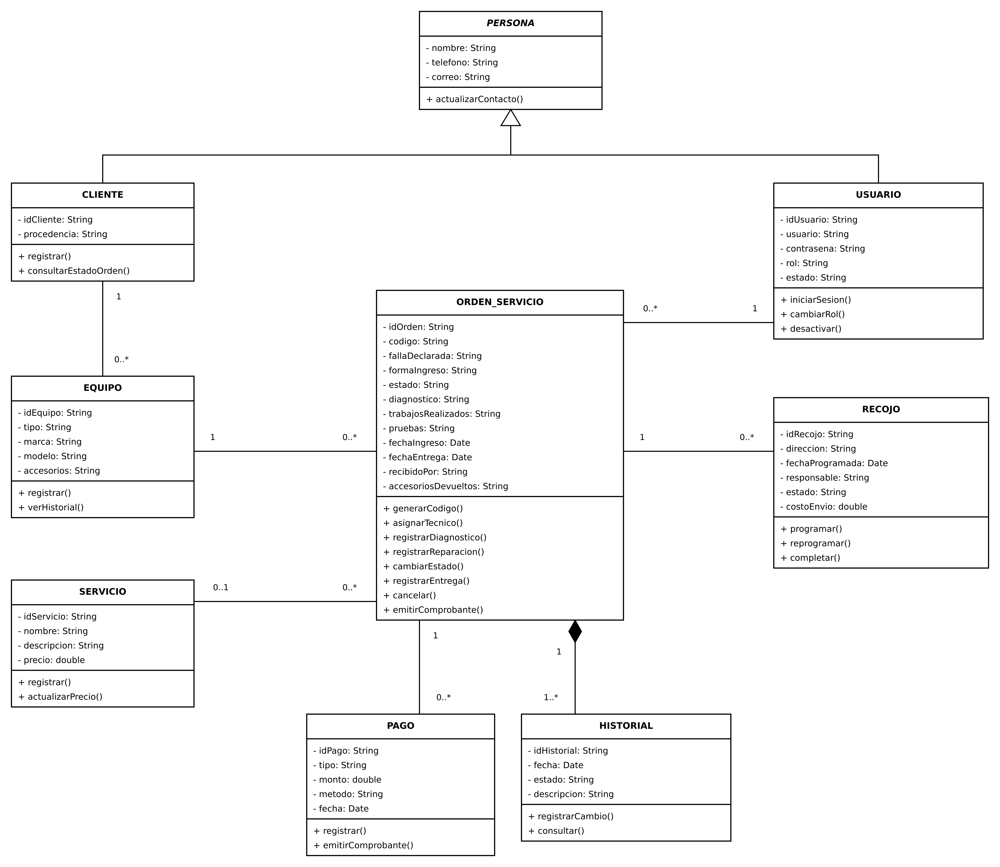
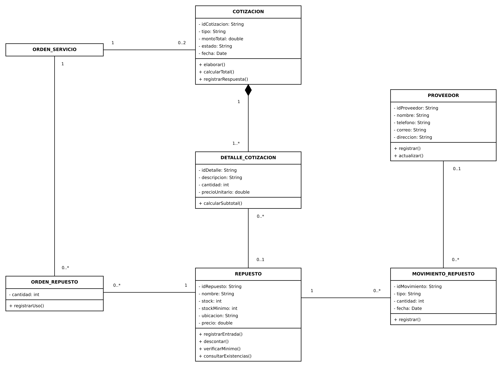
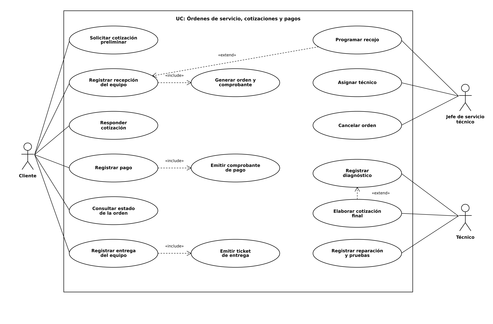
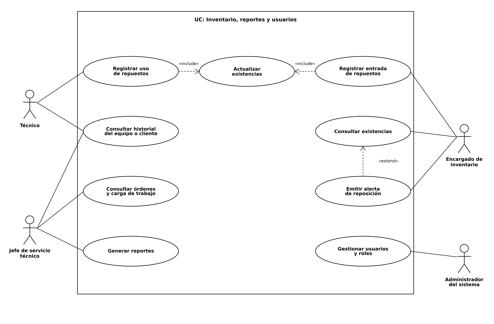
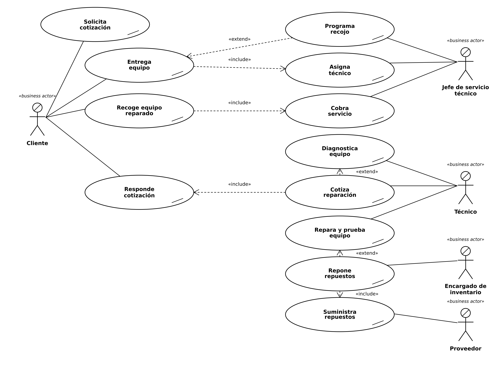

III. Análisis y diseño orientado a objetos
En esta parte se modela el sistema de servicio técnico de Drontec con el enfoque orientado a objetos, usando UML. Se presentan, en este orden, el diagrama de clases, el diagrama de casos de uso de sistema, el diagrama de casos de uso de negocio y un caso de uso de tipo texto expandido. Todos parten del trabajo de la parte anterior: los acontecimientos del modelo ambiental dan origen a los casos de uso, y las entidades del DER dan origen a las clases.
- 1. Diagrama de clases
- 2. Diagrama de casos de uso de sistema
- 3. Diagrama de casos de uso de negocio
- 4. Caso de uso de tipo texto expandido
1. Diagrama de clases
El diagrama de clases se obtiene de las entidades del DER: cada entidad pasa a ser una clase con sus atributos y con los métodos que le corresponden según los casos de uso. Los atributos llevan visibilidad privada («-») y los métodos visibilidad pública («+»). CLIENTE y USUARIO comparten el nombre, el teléfono y el correo, por lo que heredan de la clase abstracta PERSONA (el triángulo vacío indica herencia, y el nombre en cursiva, que la clase es abstracta). El rombo negro indica composición: el historial no existe sin su orden y el detalle no existe sin su cotización. Junto a cada extremo de una línea se escribe la cardinalidad: “1” es exactamente uno, “0..*” ninguno o varios, “1..*” uno o varios y “0..1” ninguno o uno. Como el diagrama completo es muy grande, se divide en dos; la clase ORDEN_SERVICIO aparece en ambos como punto de unión.


2. Diagrama de casos de uso de sistema
El diagrama de casos de uso de sistema muestra qué funciones ofrece el sistema web a cada actor. Para que se lea con claridad se divide en dos diagramas: el primero reúne las funciones de las órdenes de servicio, las cotizaciones y los pagos, y el segundo las del inventario de repuestos, los reportes y los usuarios. El rectángulo representa el límite del sistema; los actores quedan fuera de él. El proveedor no aparece porque no usa el sistema: sus entregas las registra el encargado de inventario.


3. Diagrama de casos de uso de negocio
El diagrama de casos de uso de negocio muestra qué hace Drontec como empresa para atender un equipo, sin hablar todavía del sistema informático. Los actores de negocio son el cliente, el jefe de servicio técnico, el técnico, el encargado de inventario y el proveedor. Cada elipse con una marca diagonal es un proceso de negocio. La relación «include» indica que un proceso siempre incluye a otro (por ejemplo, cuando el cliente recoge su equipo reparado se cobra el servicio), y la relación «extend» indica que un proceso se agrega solo en algunos casos (por ejemplo, el recojo se programa solo cuando el equipo viene de otra ciudad).

4. Caso de uso de tipo texto expandido
Como ejemplo se expande el caso de uso “Registrar recepción del equipo y generar la orden”, que corresponde al subproceso 1.4 del DFD y al acontecimiento 4 del modelo ambiental. Se describe en el formato visto en clase: información general, resumen, secuencia normal de eventos (con la acción del actor a la izquierda y la respuesta del sistema a la derecha), cursos alternos y, al final, las funciones del sistema con su categoría (evidente u oculta).
| Caso de uso | Registrar recepción del equipo y generar la orden |
| Grado de detalle | Expandido |
| Actores | Cliente (iniciador); Sistema de servicio técnico |
| Propósito | Registrar el ingreso de un equipo al taller y abrir su orden de servicio, de modo que el equipo quede identificado y su estado pueda seguirse hasta la entrega. |
| Tipo | Primario y esencial |
| Referencias | R1.1, R1.2, R1.3, R1.4, R1.5, R1.6 |
| Precondiciones | El personal del taller inició sesión en el sistema. |
| Poscondiciones | Quedan registrados el cliente y el equipo con su falla. Se creó la orden de servicio con código único y estado RECIBIDO. Se emitió el comprobante de recepción. El historial del equipo registra la recepción. |
| Resumen | El cliente lleva su equipo al taller (o llega el equipo recogido) y el personal registra sus datos, los del equipo, la falla y la forma de ingreso. El sistema genera la orden de servicio, la deja en estado RECIBIDO y emite el comprobante de recepción. |
Secuencia normal de eventos
| Acción del actor | Respuesta del sistema |
|---|---|
| 1. El cliente llega con el equipo (o éste llega por recojo) e indica sus datos. | 2. Busca al cliente por nombre o teléfono; si no existe, solicita registrarlo. |
| 3. Confirma o ingresa nombre, teléfono, correo y procedencia. | 4. Valida y registra al cliente (R1.1) y solicita los datos del equipo. |
| 5. Indica tipo, marca, modelo, accesorios y la falla que describe. | 6. Valida y registra el equipo y su falla (R1.2). |
| 7. Indica la forma de ingreso (en persona o por recojo). | 8. Registra la forma de ingreso (R1.3) y genera la orden con código único, fecha, hora y estado RECIBIDO (R1.4). |
| 9. Registra la recepción en el historial del equipo (R1.5). | |
| 10. Emite el comprobante de recepción con el código de la orden (R1.4) y lo entrega. | |
| 11. Recibe el comprobante. |
Cursos alternos
| Línea 2 | El cliente ya está registrado: el sistema muestra sus datos y el flujo continúa en la línea 5. |
| Línea 4, 6 | Faltan datos obligatorios o son inválidos (R1.6): el sistema indica el campo y pide corregirlo antes de continuar. |
| Línea 7 | El equipo ingresa por recojo: el sistema vincula el recojo programado a la orden y marca la forma de ingreso como “por recojo”. |
| Línea 8 | Error al guardar: el sistema informa, no genera la orden y permite reintentar sin perder los datos ingresados. |
Funciones del sistema
| Ref. | Función | Categoría |
|---|---|---|
| R1.1 | Registrar cliente (nombre, teléfono, correo, procedencia). | EVIDENTE |
| R1.2 | Registrar equipo (tipo, marca, modelo, accesorios) y falla. | EVIDENTE |
| R1.3 | Registrar la forma de ingreso (en persona o por recojo). | EVIDENTE |
| R1.4 | Generar la orden con código único y emitir el comprobante de recepción. | EVIDENTE |
| R1.5 | Registrar el cambio de estado en el historial. | OCULTA |
| R1.6 | Validar que los datos obligatorios estén completos y sean correctos. | OCULTA |